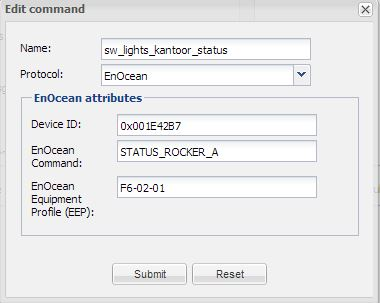

Hi guys,
In Rainer Hitz's wonderful Enocean protocol implementation, I added an automatic state function for Enocean switches without using virtual commands or rules.
Most of the switches/actuators in our house are of the unidirectional Enocean type.
I did however want to display the actual switch state (on/off) whether switched by the actual hardware switch or through software (Ipad).
The only solution to keep the state in sync with the actual hardware was to use virtual commands next to the actual hardware commands and combine this with some additional rules.
Here's the setup you would need for a single switch to maintain its proper state:
Yes, quite a hassle.. and the naming convention is very important as well as to not make the rules equally as long..
Anyways...
I can now set up a single switch without any additional rules like so:
As you can see all the virtual commands are gone and all you need to do is add the original (hardware) switch's Device ID to the send command's "Device ID" field (separated from the send ID by a pipe char):
In this example, clicking the software switch will now send "ON_ROCKER_A" to device ID 0x01 which you linked to the actuator, but in addition it will also set the correct state (ON) for any sensor object with device ID: 0x001E42B7 and "STATUS_ROCKER_A".
This is the status command used by the sensor:

I'm not sure if Rainer Hitz would've taken the same approach to implement this, but I hope he's willing to have a look at the code to see if we can merge this solution into the code. It would also be nice if we'd have a separate field for the linkID instead of having to add it to the Device ID using the pipe char.
Should anyone want to try it, let me know and I can send you the files.
Thanks again for a wonderful job on this piece of software guys!
{kind=link}
{kind=link}
{kind=link}
{kind=link}